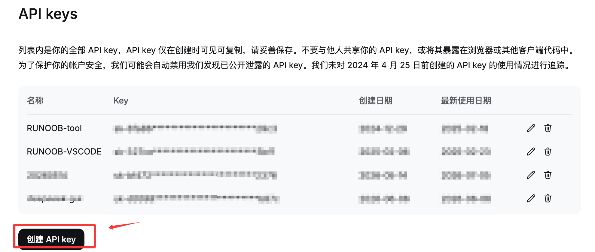
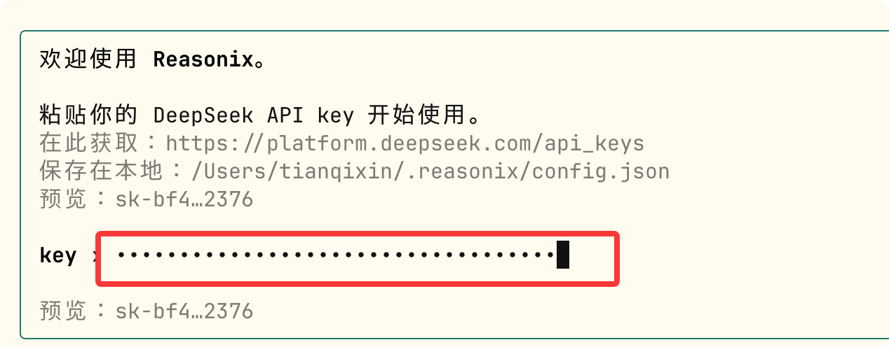
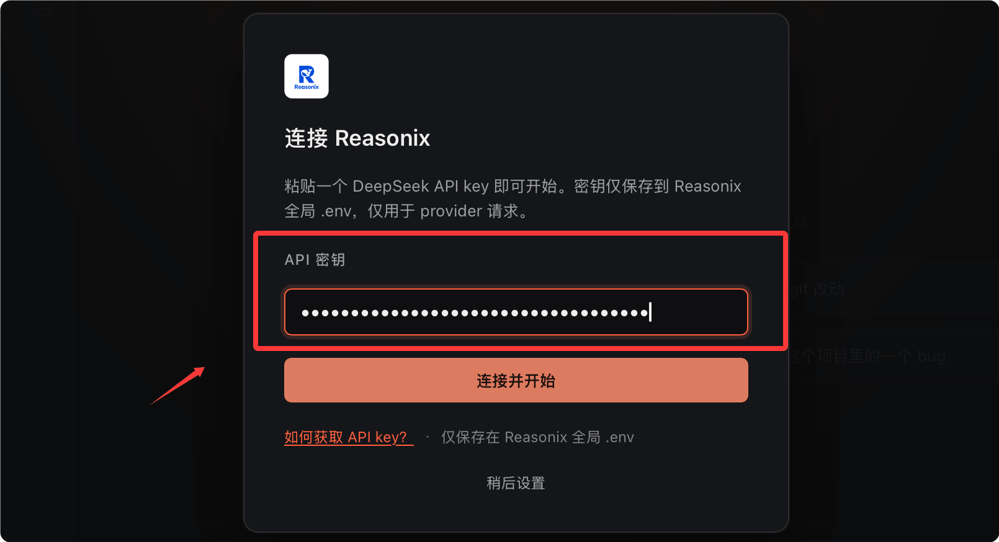
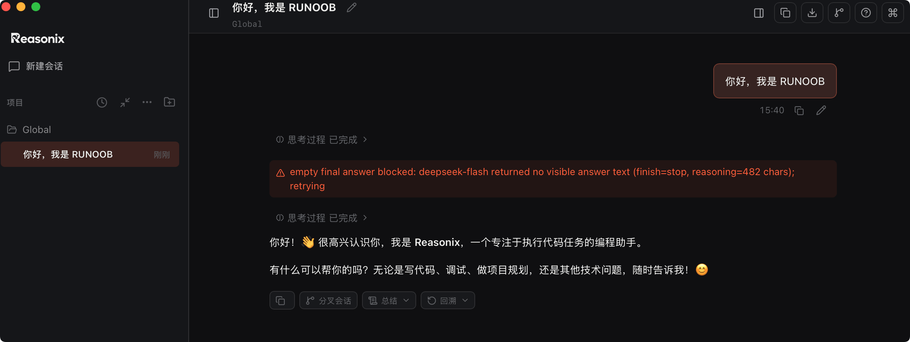
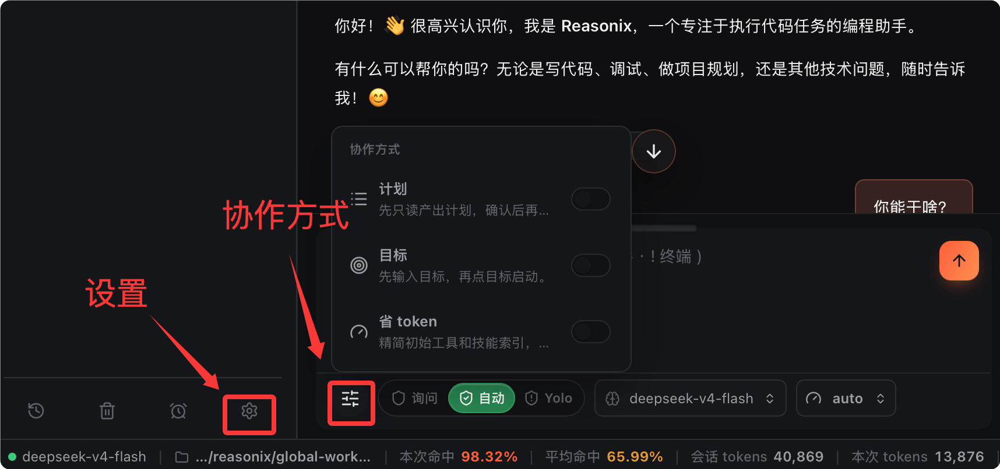
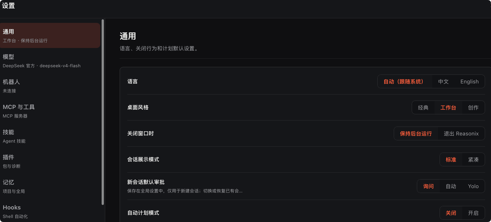

Tutorial de iniciación a Reasonix
Reasonix es un agente de programación con IA de código abierto para terminal, profundamente optimizado para DeepSeek. Todo su bucle de ejecución está diseñado desde cero en torno al mecanismo de prefix-cache de DeepSeek, con el objetivo de que la programación con IA sea lo suficientemente barata como para dejarla corriendo siempre.
Filosofía de diseño de Reasonix:"A coding agent that stays cheap enough to leave on."(Un agente de programación lo suficientemente barato como para dejarlo siempre corriendo).

¿Para quién es?
| Escenario | Descripción |
|---|---|
| Uso principal de DeepSeek para tareas de programación | Adaptación profunda a la API de DeepSeek, con una tasa de acierto de caché muy superior a las herramientas genéricas |
| Preocupación por el costo de uso de la IA | Control preciso de costos, con límite de presupuesto y estadísticas de gastos en tiempo real |
| Preferencia por el flujo de trabajo en terminal | Diseño con prioridad en la terminal: el diff está en git diff, el árbol de archivos está en ls |
| Ejecutar el agente de forma continua durante largos períodos | La elección ideal para análisis de grandes bases de código, refactorización por lotes y otros escenarios |
Lo que Reasonix no hace
Reasonix tiene criterio propio; esto es lo que deliberadamente no hace:
| Lo que no hace | Motivo |
|---|---|
| Cambio flexible entre múltiples proveedores | Exclusivo de DeepSeek; esto es un diseño, no una limitación |
| Integración con IDE | La terminal es prioritaria; no busca plugins de IDE |
| Los benchmarks de razonamiento más difíciles | Claude Opus sigue a la cabeza en algunos benchmarks; para resolver problemas de demostración de nivel PhD, empieza con Claude |
| Offline / completamente gratuito | Requiere una API Key de DeepSeek de pago; para opciones sin conexión, mira Aider + Ollama |
Antes de usar Reasonix necesitas obtener una API Key de DeepSeek. Visitaplatform.deepseek.com/api_keys

Haz clicCrear API key, nómbrala (por ejemplo, reasonix), cópiala y guárdala.
En la primera ejecuciónreasonixse te pedirá pegar la API Key; al ingresarla se guarda automáticamente y no necesitarás volver a escribirla.
Instalación: CLI y versión de escritorio
Reasonix ofrece dos métodos de instalación: CLI y versión de escritorio. A continuación se presentan por separado.
Instalación CLI
Requisitos del sistema: Node.js ≥ 22, compatible con macOS, Linux y Windows (PowerShell, Git Bash, Windows Terminal).
Instalación global (recomendada para uso diario):
npm install -g reasonix
Experiencia sin instalación (npx, siempre usa la última versión):
# 进入项目目录，直接使用 npx 运行 cd my-project npx reasonix code
Verificación y comprobación de salud; consulta el número de versión:
reasonix --version
Comprobación de salud: versión de Node, accesibilidad de la API Key, configuración MCP:
reasonix doctor
Actualizar a la última versión:
reasonix update
Completa la configuración mediante un asistente interactivo; inicializa la API Key, el idioma, el tema y demás ajustes.
reasonix setup
Selecciona el idioma:

Selecciona el tema:

Ingresa la API key de DeepSeek:

Presiona Enter para guardar:

A continuación, entra en el proyecto vibe-coding-runoob y podrás empezar a usarlo:
cd vibe-coding-runoob
Ingresa el siguiente comando para empezar a usarlo:
reasonix

Ingresa/para ver los comandos admitidos:

Instalación de la versión de escritorio
La versión de escritorio es un cliente nativo basado en Tauri, con múltiples pestañas; el panel derecho muestra los archivos que el agente ha leído o editado en la sesión actual.
En la parte inferior se muestran los mismos contadores de costos/caché/Token que en la barra superior de la CLI. Utiliza la misma API Key de DeepSeek y la configuración de ~/.reasonix.
La versión de escritorio incluye el runtime de Node, sin necesidad de npm install por separado.
Desde el sitio web oficial (https://reasonix.io/#start) descarga el paquete de instalación correspondiente a tu plataforma:

| Plataforma | Formato de archivo |
|---|---|
| macOS | Reasonix_x.x.x_universal.dmg |
| Windows | Reasonix_x.x.x_x64-setup.exe |
| Linux | Reasonix_x.x.x_amd64.AppImage o .deb |
Después de descargarlo, haz doble clic para instalar y luego ingresa la API key:

Al iniciarse, la versión de escritorio también tiene el clásico diseño de izquierda-derecha:

Puedes escribir un mensaje en el campo de entrada para comenzar la conversación:

Haz clic en el ícono de la esquina superior derecha para abrir el diseño de tres columnas:
Tres formas de colaboración:

Configuración común, que incluye tema, apariencia, idioma, plugins, MCP, etc.:

Notas sobre el primer inicio:
En macOS, el primer inicio activa el bloqueo de Gatekeeper. Para desbloquearlo una sola vez: ejecuta xattr -dr com.apple.quarantine /Applications/Reasonix.app en la terminal, o haz clic derecho → Abrir → Confirmar.
Windows: SmartScreen muestra «Publicador desconocido», haz clic en «Más información → Ejecutar de todos modos». Linux: .deb y .AppImage se ejecutan directamente, sin pasos adicionales.
La versión de escritorio está actualmente en estado Prerelease; el ciclo y el protocolo son exactamente los mismos que los de la CLI, pero la interfaz de usuario sigue puliéndose y el paquete de instalación aún no está firmado digitalmente. La CLI es la interfaz principal de desarrollo; cualquier función presente en la CLI se puede usar en el campo de entrada de la versión de escritorio.
Primera ejecución
Entra en el directorio del proyecto e inicia el modo de programación de Reasonix.
cd your-project # 启动编程模式（以下两种方式等价） reasonix code # 或者直接 reasonix
Intenta enviar el primer mensaje:
分析这个项目的目录结构，告诉我主要模块的职责
Reasonix invocará herramientas como list_directory, read_file para escanear el proyecto y generará un análisis estructurado.
Ejecución headless (compatible con pipes)
# 单次执行，结果流式输出到 stdout reasonix run "统计 src 目录中每个 .ts 文件的行数，按从多到少排序" # 结合 git diff 使用 git diff HEAD~1 | reasonix run "给这段 diff 写一个 Conventional Commits 格式的 commit message"
Dos modos: code y chat
Reasonix ofrece dos modos de ejecución, adecuados para diferentes escenarios de uso.
| Capacidades | code | chat |
|---|---|---|
| Herramientas de sistema de archivos + edit_file | ✓ | — |
| Revisión de SEARCH/REPLACE → /apply | ✓ | — |
| Herramientas de shell (controladas por permisos) | ✓ | — |
| Modo Plan, /todo, /skill new, /mcp add | ✓ | — |
| Memoria (remember / recall_memory) | Nivel de proyecto + global | Solo global |
| Servidores MCP, búsqueda web, ask_choice | ✓ | ✓ |
| Ámbito de sesión | Aislado por directorio | Predeterminado compartido |
code es el modo predeterminado y el único que tiene herramientas de sistema de archivos y shell. Empieza aquí.
chat es un modo más ligero sin acceso a disco: se usa cuando necesitas un compañero de pensamiento pero no quieres que la IA toque archivos, o para montar MCP y hacer recuperación de información.
El prompt del sistema en el modo chat es más corto y el costo de tokens es menor.
Reasonix vincula el ámbito de las herramientas de sistema de archivos al directorio de inicio, y se redirige con --dir. No se admite cambiar de directorio a mitad de camino (las rutas de memoria se mezclarían con la raíz anterior): sal y reinicia.
# 在指定目录下启动 code 模式 reasonix code --dir /path/to/other-project
Control de edición: flujo de vista previa SEARCH/REPLACE
Es el mecanismo de seguridad más importante de Reasonix: la IA nunca modifica archivos sin que lo sepas.
Tres modos de control de edición
Se cambian con /mode o Shift+Tab:
| Modo | Comportamiento |
|---|---|
| review | Muestra una vista previa de cada edición, confirmación bloque a bloque con y/n |
| auto（AUTO） | Se aplica automáticamente, pero se puede deshacer con u dentro de 5 segundos |
| yolo | Escribe directamente en disco, sin confirmación alguna |
Flujo de edición típico (modo review)
1. 你：帮我把 getUserById 函数加上错误处理
2. Reasonix 分析代码，提出 SEARCH/REPLACE 修改方案：
─── src/services/user.ts ───
- async function getUserById(id: string) {
- const user = await db.users.findOne({ id });
- return user;
- }
+ async function getUserById(id: string): Promise<User | null> {
+ try {
+ const user = await db.users.findOne({ id });
+ return user ?? null;
+ } catch (error) {
+ logger.error({ id, error }, 'getUserById failed');
+ throw new AppError('USER_FETCH_FAILED', 500);
+ }
+ }
3. 你：/apply ← 确认应用，文件写盘
/discard ← 丢弃不应用
/walk ← 逐块 git-add-p 风格审查
Historial de edición
# 列出本次会话的所有编辑批次 /history # 查看某次编辑的 diff /show <id> # 回滚最近一次 /apply /undo
Modo Plan: puerta de análisis de solo lectura
El modo Plan pone a Reasonix en estado de solo lectura: la IA solo puede leer archivos, analizar código y proponer planes; no puede escribir archivos ni ejecutar comandos hasta que apruebes explícitamente el plan.
Activación y flujo de trabajo
/plan ← 切换 Plan 模式（顶栏出现 PLAN MODE 标记） 你：我想把这个 Express 应用迁移到 Fastify，先给我分析影响范围 AI 分析后提交计划： ✓ 需要替换 5 个路由文件 ✓ 3 个中间件需要适配 ✓ 12 个测试需要更新 预计改动：43 个文件，约 800 行 plan-confirm 模态框出现 → Ctrl+P 展开/折叠完整计划详情 → 批准后 AI 进入执行模式 → 执行过程中每次修改仍走编辑门控
Cuándo usar el modo Plan
| Escenario | Descripción |
|---|---|
| Cambios grandes | La tarea afecta a más de 5 archivos |
| Cambios de arquitectura | Migración de frameworks, cambio de base de datos, rediseño de API |
| Colaboración en equipo | Escenarios donde hay que alinear el plan |
| Alcance incierto | Quieres previsualizar qué partes tocará la IA primero |
Modelos y control de costos
Reasonix ofrece mecanismos flexibles de cambio de modelo y control de costos.
Cambiar de preset
# 默认 smart（v4-flash + max 推理） reasonix code # 快速任务，v4-flash + high 推理，成本最低 reasonix code --preset fast # 复杂任务，v4-pro + max 推理 reasonix code --preset max
Cambio dentro de la sesión:
/preset auto # 开启自动升级逻辑（flash 优先，失败升级 pro） /preset flash # 锁定 flash /preset pro # 锁定 pro
/pro actualización única
El usuario escribe /pro, la siguiente ronda usa v4-pro y luego se desactiva automáticamente. Sin cambios de preset, sin olvidarse de restaurar.
El estado activo se muestra como una marca amarilla 'pro armed' en la barra superior.
> /pro > 解释这段 Rust 异步代码里的生命周期标注为什么必须这样写 # 回答完成后自动恢复 v4-flash
Actualización automática al fallar
Eventos visibles de 'flash insuficiente' que se cuentan por ronda: errores SEARCH-not-found de edit_file/write_file, y activación de ToolCallRepair.
Cuando el contador llega a 3, el resto de la ronda actual cambia automáticamente a v4-pro y se anuncia mediante una línea de advertencia amarilla: sin costos silenciosos.
Establecer límite de presupuesto de sesión
# 本次会话上限 $0.50 reasonix code --budget 0.50
/budget 0.20 # 会话中设置 $0.20 上限 /budget off # 取消上限
Advierte al llegar al 80% y rechaza la siguiente ronda al llegar al 100%.
Compresión de contexto y consulta de costos
/compact # 手动将旧轮次折叠为摘要（缓存安全）
# 上下文达到 50% 时自动触发，这是手动触发
/cost # 上一轮花费
/cost 这段文字 # 预估发送这段文字的成本
/stats # 跨会话成本仪表板（今天/本周/本月/所有时间）
Habilidades (Skills): guiones reutilizables en Markdown
Las skills son guiones Markdown que la IA puede invocar según sea necesario; no hay registro remoto: se escriben directamente y surten efecto de inmediato.
Crear una habilidad
# 项目级技能：<project>/.reasonix/skills/code-review.md /skill new code-review # 全局技能：~/.reasonix/skills/deploy-check.md /skill new deploy-check --global
Formato de archivo de habilidades
Ruta de archivo: .reasonix/skills/code-review.md
--- description: 对当前改动做系统性代码审查，按 P0-P3 优先级分级 runAs: subagent tools: [read_file, list_directory, search_content] --- 分析 `git diff HEAD` 中的所有改动。 对每个发现的问题，按如下格式输出： **[P0]** 严重（阻止合并）：安全漏洞、逻辑错误、数据丢失风险 **[P1]** 重要（强烈建议修复）：性能问题、错误处理缺失 **[P2]** 一般（建议修复）：代码质量、可读性 **[P3]** 改进（可选）：最佳实践、未来优化 每条包含：文件名和行号 · 问题描述（一句话）· 修复建议。 最后给出总体评估：是否可以合并，以及最重要的三个改进点。
runAs: subagent hace que la skill se ejecute en un bucle de subagente aislado; el contexto de la sesión principal no se expande.
Invocación y gestión
/skill code-review # 调用技能 /skill list # 列出所有可用技能 /skill show code-review # 查看技能内容
Habilidades compatibles con el formato de Claude
<project>/.claude/skills/<name>/SKILL.md y ~/.claude/skills/ también se leen automáticamente.
Conviven con las rutas nativas de Reasonix, por lo que las herramientas que exportan skills en formato Claude se pueden usar directamente.
# 写入 .claude/skills/openspec-*/SKILL.md npx openspec init --tools claude # 在 Reasonix 中直接调用 /skill openspec-propose <task>
Memoria (Memory): persistencia de contexto entre sesiones
Reasonix tiene cuatro tipos de memoria para conservar contexto entre sesiones.
| Tipo | Ámbito | Uso |
|---|---|---|
| user | Global | Tus preferencias, hábitos de trabajo |
| feedback | Global | Experiencias de errores o éxitos de la IA |
| project | Nivel de proyecto | Convenciones del proyecto, decisiones de arquitectura |
| reference | Configurable | Material de referencia fijo |
Escritura manual
/remember 这个项目用 pnpm 而不是 npm /remember 所有 API 错误统一走 AppError 类，不要 throw 原生 Error /remember Turso 批量写入并发时需要加锁，见 src/db/mutex.ts
Gestión de memoria
/memory list # 查看所有记忆 /memory show <id> # 查看某条记忆详情 /memory forget <id> # 删除某条记忆 /memory clear # 清空所有记忆
Archivo de memoria del proyecto (REASONIX.md)
Crea REASONIX.md en la raíz del proyecto; se carga automáticamente al inicio de cada sesión.
# 扫描项目，自动生成 REASONIX.md 基线 /init # 强制重新生成（覆盖已有文件） /init force
O crearlo manualmente:
# 项目：runoob-backend ## 技术栈 - Runtime：Bun 1.2（禁止使用 Node.js 专属 API） - 框架：Hono - 数据库：Turso（libSQL） ## 编码规范 - 所有函数必须有 JSDoc 类型注解 - 错误统一用 AppError 类 - 禁止 any 类型 ## 已知陷阱 - Turso 并发写入需要互斥锁，见 src/db/mutex.ts
Integración MCP: conectar herramientas externas
Los servidores MCP admiten tres métodos de transporte: stdio, SSE y Streamable HTTP.
El mismo formato de configuración se aplica tanto a config.json como al parámetro de línea de comandos --mcp.
Añadir dinámicamente durante la sesión
/mcp # 打开 MCP 中心（在线 + 市场标签页） /mcp add stdio:npx,-y,@modelcontextprotocol/server-github
Montaje mediante línea de comandos
# 通过命令行参数挂载 MCP 服务器 reasonix code --mcp stdio:npx,-y,@modelcontextprotocol/server-github
Preset de configuración (recomendado)
Ruta de archivo: ~/.reasonix/config.json
Ejemplo
"mcp": {
"servers": {
"github": {
"transport": "stdio",
"command": "npx",
"args": ["-y", "@modelcontextprotocol/server-github"],
"env": {
"GITHUB_PERSONAL_ACCESS_TOKEN": "${GITHUB_TOKEN}"
}
},
"postgres": {
"transport": "stdio",
"command": "npx",
"args": ["-y", "@modelcontextprotocol/server-postgres"],
"env": {
"POSTGRES_CONNECTION_STRING": "postgresql://localhost/mydb"
}
},
"searxng": {
"transport": "sse",
"url": "http://localhost:8080/mcp/sse"
}
}
}
}
Explorar herramientas MCP
/mcp list # 列出已连接的服务器 /resource # 浏览 MCP 资源 /prompt # 浏览 MCP 提示词模板
Hooks: automatización del ciclo de vida
Los hooks admiten cuatro eventos del ciclo de vida; PreToolUse puede interceptar invocaciones de herramientas con un código de salida distinto de cero.
Eventos admitidos
| Hook | Momento de activación | Capacidad especial |
|---|---|---|
| PreToolUse | Antes de la invocación de la herramienta | Salida distinta de cero = rechazar la invocación |
| PostToolUse | Después de la invocación de la herramienta | Registro / formateo |
| UserPromptSubmit | Cuando el usuario envía un mensaje | Inyectar contexto adicional |
| Stop | Al finalizar la sesión | Resumen / limpieza |
Ejemplo de configuración
Ruta de archivo: ~/.reasonix/config.json
Ejemplo
"hooks": {
"PostToolUse": [
{
"matcher": { "tool": "edit_file" },
"command": "npx biome format --write {{file}} 2>/dev/null || true",
"description": 'Formatear automáticamente después de editar el archivo'
}
],
"PreToolUse": [
{
"matcher": { "tool": "run_command" },
"command": "echo '$(date): {{command}}' >> ~/.reasonix/audit.log",
"description": 'Registrar todos los comandos de shell en el registro de auditoría'
}
],
"Stop": [
{
"command": "reasonix stats --session last >> ~/.reasonix/sessions-log.txt",
"description": 'Guardar estadísticas al finalizar la sesión'
}
]
}
}
Ver y recargar
/hooks # 列出所有已配置的 hooks /hooks reload # 热重载 hooks 配置（无需重启）
Gestión de sesiones y Checkpoint
Reasonix ofrece una gestión completa de sesiones y funciones de instantáneas de archivos.
Gestión de sesiones
Ejemplo
reasonix sessions
# Abrir la sesión especificada
reasonix sessions my-project
# Eliminar sesiones de hace 30 días
reasonix prune-sessions --days 30
Comandos dentro de la sesión:
/sessions # 列出已保存会话（当前标记 ▸） --session <name> # 启动时绑定到具名会话 --continue # 恢复该工作区最近一次会话 --new # 强制新建会话（即使已有现成的） --no-session # 临时运行，不持久化任何内容
Checkpoint (instantánea de archivos)
/checkpoint # 为本次会话碰过的所有文件创建快照 /checkpoint my-snapshot # 创建具名快照 /checkpoint list # 列出所有快照 /checkpoint forget <id> # 删除快照 /restore my-snapshot # 恢复到指定快照
Reproducir sesión (para depuración)
# 重新渲染 JSONL 会话记录，不调用模型 reasonix replay <transcript> # 对比两个会话的成本/缓存/Token 差异 reasonix diff <a> <b> # 跟踪某个会话的事件日志 reasonix events <name>
Índice semántico y búsqueda web
Reasonix admite crear un índice vectorial local para el proyecto y configurar motores de búsqueda web.
Índice semántico
Crea un índice vectorial local para el proyecto; admite búsqueda semántica sin necesidad de coincidencia exacta de palabras clave.
# 构建索引（需要 Ollama 或 OpenAI 兼容 Embedding 端点） reasonix index
Configuración (~/.reasonix/config.json):
Ejemplo
"index": {
"endpoint": "http://localhost:11434/api/embeddings",
"model": "nomic-embed-text"
}
}
Después de crearlo, úsalo en la sesión:
> 找出所有和用户认证相关的代码 # 触发 semantic_search 工具，基于语义而非关键词检索
Búsqueda web
Por defecto usa Mojeek; se cambia con /search-engine (o /se).
/search-engine mojeek # 默认，隐私友好 /search-engine searxng # 自托管 SearXNG 实例 /search-engine metaso # 秘塔搜索（中文内容优化）
Configurar SearXNG autohospedado:
Ejemplo
"search": {
"engine": "searxng",
"searxngUrl": "http://localhost:8888"
}
}
Control remoto del canal QQ
Reasonix puede usar QQ como canal de comunicación remota para las sesiones existentes de chat y code; no es un modo de ejecución independiente.
Primero inicia la sesión y luego conecta QQ.
# 1. 先启动会话 reasonix code # 2. 会话中连接 QQ /qq connect # 首次使用引导输入 App ID 和 App Secret /qq status # 查看连接状态 /qq disconnect # 断开连接
Una vez conectado, los comandos de barra, las indicaciones de confirmación y las respuestas de la IA se pueden hacer a través de QQ, sin necesidad de escribir en la terminal. Las sesiones posteriores de chat / code iniciarán automáticamente el canal de QQ. Los usuarios de la versión de escritorio pueden configurarlo en Settings → General → QQ Channel.
Guía en profundidad de la versión de escritorio
La versión de escritorio añade más funciones visuales sobre la base de la TUI de CLI.
Disposición de la interfaz
La versión de escritorio añade tres paneles principales sobre la base de la TUI de CLI:
| Panel | Función |
|---|---|
| Panel de archivos derecho | Muestra en tiempo real la lista de archivos que el agente ha leído o editado en la sesión actual; haz clic para ver el contenido directamente. |
| Barra de estado inferior | Corresponde completamente con la barra superior de la CLI: contador de costos, tasa de aciertos de caché, modelo actual, consumo de tokens |
| Pestañas múltiples | Permite abrir varias sesiones de proyecto al mismo tiempo, con conmutación independiente entre pestañas |
Relación con la CLI
La versión de escritorio y la CLI comparten la misma configuración (~/.reasonix/config.json) y clave API.
Las habilidades, memorias y configuraciones de MCP guardadas en la CLI están disponibles inmediatamente en la versión de escritorio, y viceversa.
Todos los comandos de barra inclinada disponibles en la CLI son totalmente compatibles con el campo de entrada de la versión de escritorio. Incluye /plan, /skill, /mcp, /apply, /pro, etc.
Capacidades exclusivas de la versión de escritorio
| Capacidad | Descripción |
|---|---|
| Exploración gráfica del árbol de archivos | Exploración visual de los archivos del proyecto en el panel derecho |
| Gestión del espacio de trabajo con múltiples pestañas | Experiencia más amigable al cambiar entre proyectos |
| Configuración gráfica de QQ | Settings → General → QQ Channel |
| Entorno de ejecución de Node integrado | El usuario no necesita instalar Node.js por separado |
Caso 1: exploración de un proyecto nuevo y lectura de código
Escenario: Te haces cargo de un repositorio backend de TypeScript desconocido y necesitas comprender rápidamente la arquitectura y encontrar los módulos clave.
Usa el modo chat (sin modificar archivos, ahorrando costos):
# 进入项目目录，使用 chat 模式并挂载 MCP cd unknown-project reasonix chat --mcp stdio:npx,-y,@modelcontextprotocol/server-github
Demostración del proceso de conversación:
你：用 100 字以内描述这个项目是做什么的
AI：[调用 read_file 读 README.md 和 package.json]
这是一个多租户 SaaS 订阅管理服务，基于 Node.js + PostgreSQL，
处理订阅计划创建、支付 Webhook 和使用量追踪。
你：找出最核心的 3 个业务逻辑文件，各用一句话说明职责
AI：[调用 list_directory、search_content 扫描 src/]
1. src/billing/subscription.ts — 订阅生命周期管理（创建/升级/取消）
2. src/webhooks/stripe.ts — Stripe 事件处理和订阅状态同步
3. src/usage/tracker.ts — API 调用量统计和超限检测
你：src/billing/subscription.ts 里的 cancelSubscription 函数，
它做了什么，有没有可能的竞态条件？
AI：[调用 read_file 精确读取该函数]
该函数...
潜在竞态：如果同时收到两次取消请求，
第 47 行的状态检查和第 52 行的数据库更新之间存在时间窗口...
Generar memoria del proyecto:
你：把刚才了解的内容写成 REASONIX.md，我切到 code 模式后继续工作 AI：[生成 REASONIX.md 草稿] 你：/apply
Caso 2: refactorización de múltiples archivos (con modo Plan)
Escenario: Migrar uniformemente el manejo de errores de la API REST existente desde throw new Error() a una clase personalizada AppError.
Inicia y entra en el modo Plan:
# 启动 code 模式 reasonix code
你：/plan
你：我要把所有 throw new Error() 改成 throw new AppError()。
AppError 类在 src/errors.ts，接受 code、message、statusCode 三个参数。
先分析影响范围，不要做任何修改。
AI：[调用 search_content 搜索 "throw new Error"]
找到 23 处需要迁移的调用，分布在 8 个文件：
- src/routes/users.ts (5 处)
- src/routes/billing.ts (4 处)
- src/services/auth.ts (7 处)
...
建议迁移顺序：先处理 services 层（无 HTTP 依赖），
再处理 routes 层，最后更新测试。
预计改动：23 处调用，约 150 行代码变更。
[plan-confirm 弹出]
→ Ctrl+P 展开完整文件清单
你：批准
AI：[进入执行模式，依次修改文件]
每次改动都会弹出 SEARCH/REPLACE 预览
你：/apply ← 每批次确认
Después de completar la ejecución:
你：/commit
AI：[分析所有改动，生成 commit message]
"refactor: migrate error handling to AppError class
Replace 23 bare Error throws with typed AppError instances
across 8 files, improving error observability and HTTP status
code consistency."
你：确认提交
Caso 3: localización y corrección de errores (Bug)
Escenario: En el entorno de producción ocurre un error intermitente "Cannot read properties of undefined" y en los registros solo hay un seguimiento de pila.
Ejemplo
"env": {
"GITHUB_PERSONAL_ACCESS_TOKEN": "${GITHUB_TOKEN}"
}
}
}
},
"permissions": {
"shell": {
"allow": [
"npm test",
"npm run ",
"git ",
"pnpm ",
"cat ",
"ls ",
"grep "
]
}
},
"hooks": {
"PostToolUse": [
{
"matcher": { "tool": "edit_file" },
"command": "npx biome format --write {{file}} 2>/dev/null || true"
}
]
},
"search": {
"engine": "searxng",
"searxngUrl": "http://localhost:8888"
},
"index": {
"endpoint": "http://localhost:11434/api/embeddings",
"model": "nomic-embed-text"
},
"parallelMax": 4
}
Reglas de lista blanca de permisos
Se utiliza coincidencia exacta de prefijos: permitir "git " significa permitir todos los comandos que comiencen con "git " (nota el espacio al final). Los comandos que no estén en la lista blanca requerirán confirmación manual cada vez.
Comparación con otras herramientas
A continuación se muestra la comparación entre Reasonix y otras herramientas principales de programación con IA:
| Dimensión | Reasonix | Claude Code | Cursor | Aider |
|---|---|---|---|---|
| Backend | DeepSeek (exclusivo) | Anthropic | OpenAI/Anthropic | Cualquiera (OpenRouter) |
| Licencia | MIT | Código cerrado | Código cerrado | Apache 2 |
| Características de costo | Bajo costo por tarea | Precios de gama alta | Suscripción + uso | Depende del modelo |
| DeepSeek prefix-cache | Diseño especializado | No aplica | No aplica | Aciertos esporádicos |
| Panel web integrado | 是 | — | Dentro del IDE | — |
| Motor de búsqueda web configurable | /search-engine | — | — | — |
| Sesiones persistentes por espacio de trabajo | 是 | Parcial | No aplica | — |
| Modo Plan · MCP · Hooks · Skills | Todo incluido | Todo incluido | 有 | Parcial |
Recursos y comunidad
Los siguientes son los recursos oficiales de Reasonix y enlaces de la comunidad.
Recursos oficiales
| Recurso | Enlace |
|---|---|
| GitHub | esengine/DeepSeek-Reasonix |
| Sitio web oficial | https://reasonix.io/ |
| Documentación | https://reasonix.io/docs/ |
Haz clic para compartir notas
<p style="font-size:14px;">¡La nota debe ser una extensión del contenido de este artículo!</p><br> <p style="font-size:12px;"><a href="../tougao.html" target="_blank">Envío de artículos, haz clic aquí</a></p> <p style="font-size:14px;"><a href="../w3cnote/runoob-user-test-intro.html" target="_blank">Cómo obtener el código de invitación de registro</a></p> <h3 class="text-muted"><i class="fa fa-info-circle" aria-hidden="true"></i> Debes <a href=";.html" class="runoob-pop">iniciar sesión</a> antes de compartir notas!</h3> <p><a href="../w3cnote/runoob-user-test-intro.html" target="_blank">Cómo obtener el código de invitación de registro</a></p>